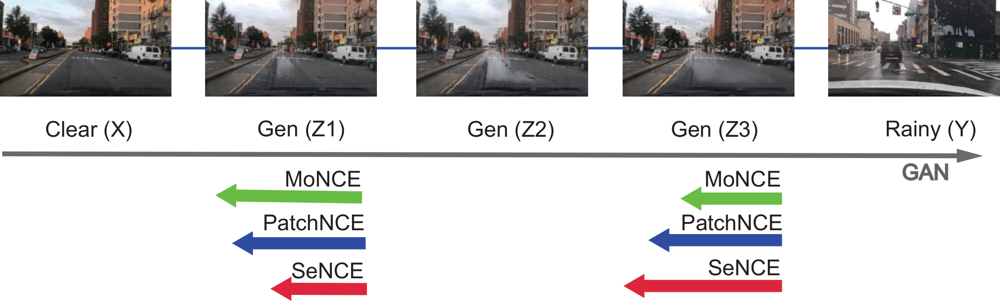

Challenges: Current I2I Methods Fail to Generate High-Quality Rainy Images for Finetuning

TPS aligns the generated rainy image with the clear and rainy image in the discriminator manifold to suppress artifacts and distortions, while SeNCE adjusts the pushing force of the negative patches based on their feature similarities with the anchor patch and refines that force with the semantic similarity between clear and rainy.

TPSeNCE uses a generator to translate clear images to rainy ones, a discriminator with TPS and GAN losses, and an encoder that embeds patches from both clear and generated images. MLPs process these patches contrastively to output SeNCE loss, guided by semantic segmentation maps.

SeNCE outperforms PatchNCE and MoNCE in optimizing the amount of rain to produce realistic rainy images. The length of the arrow here represents the magnitude of the NCE losses.
